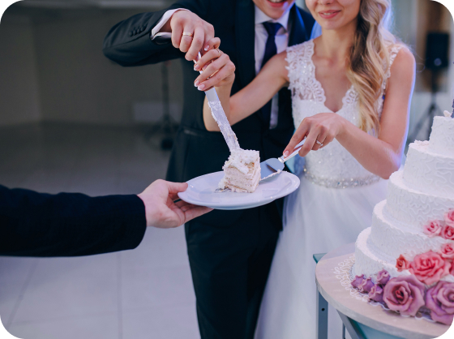
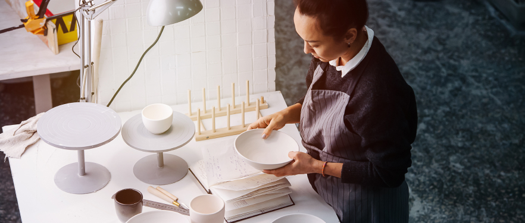

The Ultimate Guide to Choosing a Wedding Caterer
Choosing the right caterer is a crucial decision when planning your wedding. Not only does the food set the tone for the reception, but the caterer's service and professionalism can significantly impact your guests' experience. To help you navigate this important choice, here's the ultimate guide to choosing a wedding caterer:
1. Start Early: Begin your search for a wedding caterer as soon as possible, ideally several months before your wedding date. This allows you to explore different options, compare prices, and secure your preferred caterer before they get booked up.
2. Define Your Budget: Before you start reaching out to caterers, establish a clear budget for your wedding catering. Knowing how much you can afford to spend will help you narrow down your options and avoid overspending.
3. Consider Your Vision: Think about the style and theme of your wedding when selecting a caterer. Whether you're envisioning a formal sit-down dinner, a casual buffet, or a trendy food truck experience, choose a caterer who can execute your vision seamlessly.
4. Research Caterers: Gather recommendations from friends, family, and wedding vendors, and research caterers online. Look for reviews, browse their menus, and visit their websites to get a sense of their style and offerings.
5. Schedule Tastings: Once you've narrowed down your list of potential caterers, schedule tastings to sample their food. Pay attention to the quality, presentation, and flavors of the dishes, and make sure they align with your preferences and dietary needs.
6. Ask About Flexibility: Inquire about the caterer's flexibility when it comes to customizing the menu. A good caterer should be willing to accommodate dietary restrictions, special requests, and menu changes to suit your preferences.
7. Discuss Service Options: Consider the level of service you'll need on your wedding day. Will the caterer simply drop off the food, or will they provide waitstaff to serve and attend to your guests? Discuss service options with potential caterers to ensure they can meet your needs.
8. Check for Licenses and Insurance: Make sure the caterer is properly licensed and insured to operate in your area. This ensures they adhere to health and safety regulations and provides you with peace of mind on your wedding day.
9. Get Everything in Writing: Once you've selected a caterer, make sure to get all the details of your agreement in writing. This includes the menu, pricing, service fees, and any other important terms and conditions.
10. Communicate Clearly: Effective communication is key to a successful partnership with your wedding caterer. Clearly communicate your expectations, timeline, and any changes or updates to ensure everything runs smoothly on your big day.